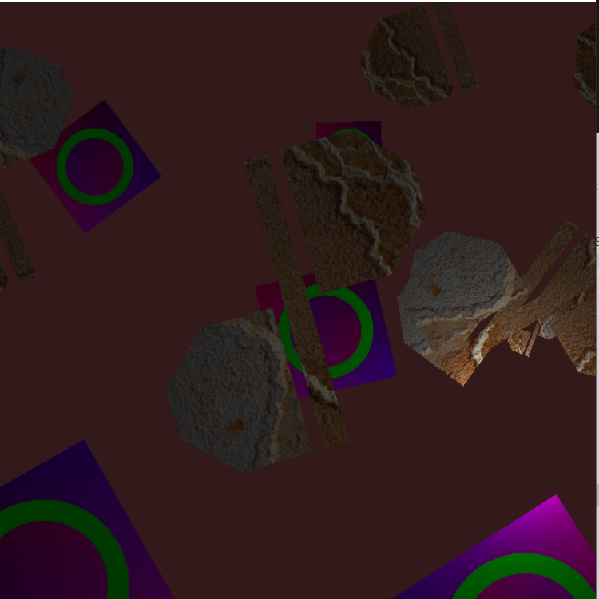
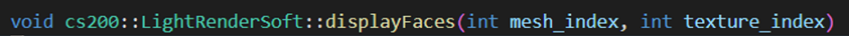

Software Renderer Assignment Walkthrough

This assignment aimed to give students a more rounded idea of what the GPU does between forward pipeline stages by making us do the work ourselves! Final fragments are uploaded to the GPU once interpolation is completed.

This is the most interesting function, so I'll briefly break it down.
Lines 107-128:

- -The function takes two indexes.
- -Each mesh should be a collection of vertices and thus faces.
- -The texture data is in bitmap coordinates, so it is of type "bitmap."
- -The loop is basically what a shader program does to each mesh and texture coordinate. We are creating an array of transformations for the vertices/coordinates going to device (screen) space, or world space coming from object space.
Lines 131-159:

- -Each face of the mesh is three vertices (triangular)
- -P, Q, R are used to find the Axis-Aligned Bounding-Box of the face of the mesh according to what is seen by users.
- -uvP, uvQ, and uvR are the alignment of the texture according to the current mesh face, in texture coordinates.
- -Pmesh, Qmesh, and Rmesh are the vertices of the mesh face in world coordinates
- -clipping AABB to frame buffer is making sure that the pixels that are set are actually going to be on-screen. We will be using those i and j values to loop and set the pixels. Screen space has a corner (0,0).
Lines 161-178:

- -We are now going to find the barycentric coordinates of the pixels inside each face (basically, a point inside the triangle).
- -We are guaranteed that the barycentric coordinates add up to 1 -- e.g., a = 0.6, b = 0.25, c = 0.15, a + b + c = 1.0. This allows us to only try to find two barycentric coordinates and subtract both from 1.
Lines 181-191:

- -Now we loop through each pixel in within the face.
- -Find the barycentric coordinates of the pixel (laI, muI, and nuI)
- -If any of the coordinates are negative, they are not inside the face, so we will not set the pixel.
- -getColor() is a function which converts the texture coordinates, the array indices that will wrap (between 0 and 1), and convert them into bitmap coordinates so that we may find the offset of the coordinates in the bitmap image and find the color coordinates from there. (R, G, B) = (0, 1, 2).
Lines 225-222:

- -We create a spotlight through fspot, ftot, and frag_color.
- This is done by finding the fraction of light that the pixel receives.
- -After we find the fraction of light, we apply it to the already existing
- color. We also make sure the opacity/alpha value is still 1 after application.
- -Then we set the pixel.